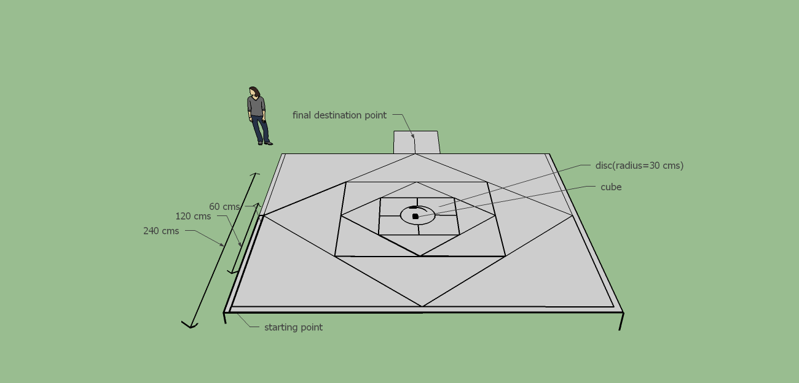
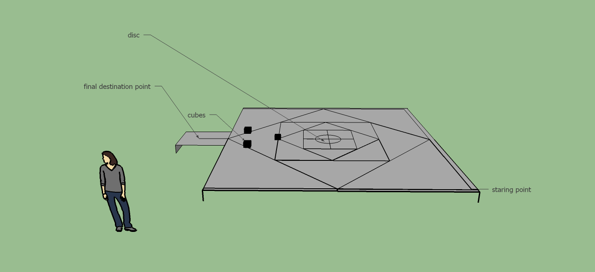
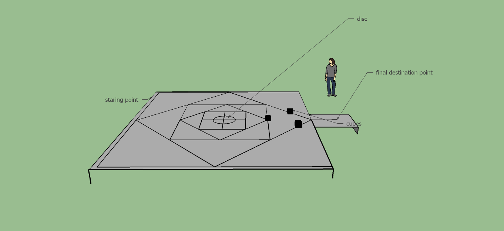
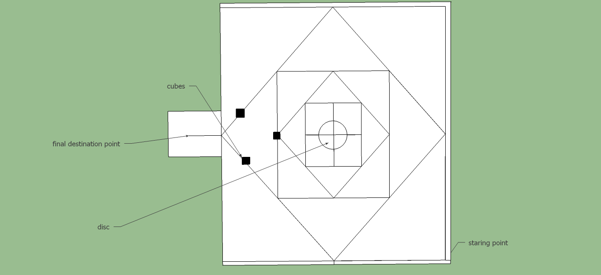
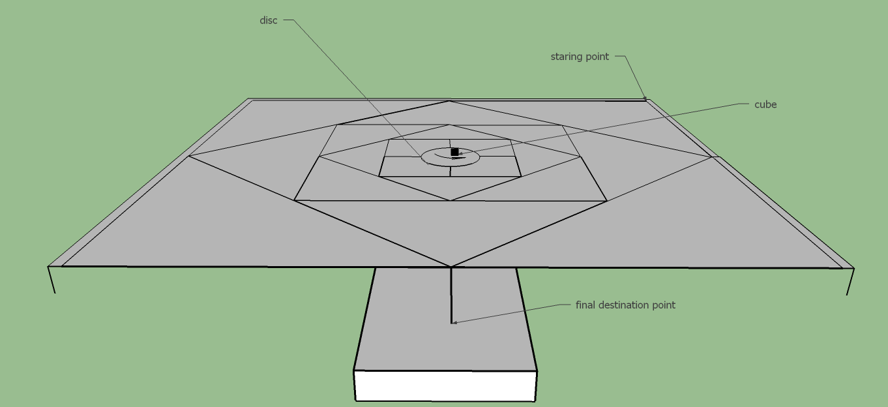

Problem Statement
"Gone are the days when bots could only follow lines while crawling on the ground. We consider bots to be equivalent to humans .Here ,bots will be required to reveal their intelligence ."
'First,bot is required to reach upto the disc kept at the centre of the grid. This disc will rotate periodically after the bot steps on the disk. The bot is required to glow the led as an indication of junction on the disc and to reach the final destination .
Rules
- . A team can consist of maximum of 4 members.
- Teams must build an autonomous bot which must be able to move across grid following black lines only.
- Bot ,if found at centre of any triangle will be disqualified instantly.
- Bot will have to first reach the disc which is at the centre of the arena.The disc will rotate & stop after every 30 seconds ,which is controlled manually by coordinators of the event .
- Entering the disc is must for robot.
- Entering the disc before 60 seconds will result into 300 points ,otherwise 200 points will be awarded.
- Bot must indicate the junction on disk by glowing led or showing any detection on lcd and then move to final destination.
- Leaving the disc with ball before disc restarts rotating will result in 400 more points .If the bot does not leave the disc before the disc restarts rotating ,then 100 points will be deducted from the total for each such occurrence.
- On detecting the blocks on the way to the final destination, bot must glow an led as an indication of detection and also remove it from its way and proceed towards final destination.
- Bot reaching final destination point before 240 seconds will be awarded 600 points ,otherwise 400 points.
- Bot must fit in a box with dimensions 35cm*35cm*25cm.
- Teams will not be allowed to give external power supply , so teams are required to use onboard power supply.
- Bot crossing the grid after 6 minutes will be disqualified.
Arena Specifications
- Dimensions of squares: 240cm,120cm, 60cm respectively from bigger to smaller.
- Radius of the disc will be 30 cms.
- Cube will be 10cm*10cm*10cm.
- Thickness of each black strip will be 1.5cm.
(Arena dimensions are prior to possible changes ,which if take place ,will be informed on the website of concetto at reasonable time).
Front View:

Left Hand View:

Right Hand View:

Top View:

Back View:

Co-ordinators
- Manan Temani
+91 7209737942
temanimanan@ismu.ac.in
- Abhishek Jha
+91 8969562979
- Ashish Bansal
+91 8298007712
ashish.ismdh@gmail.com
Organisers
-
Akash Srivastava
akashsunny22@gmail.com
+91 7209838675
-
Nikhil Dubey
+91 8102132324
-
Amit Kumar
+91 8521749988
-
Anjaney Pandey
+91 87973377105